Subsections
Two recent comprehensive overviews provide
detailed comparisons of
most of the known stereo matching algorithms [4,19]. A
stereo test-bed, the Middlebury data set [4], is widely
accepted at present as an ad hoc standard for
evaluating the
accuracy of disparity maps obtained by different algorithms. A
number of stereo matching algorithms have been also analysed in a
few earlier
surveys [20,21,22,23,24,25].
Most stereo algorithms search for the ``best matches'' between areas
to be selected as corresponding in the left and right images of a
stereo pair. By the matching criteria and optimisation strategy, the
algorithms can be placed into two main categories. The first
category performs local constrained optimisation in order to
individually match relatively small image areas whereas the second
category performs global constrained optimisation in order to match
entire scan-lines or whole images. This chapter analyses advantages
and disadvantages of most popular stereo algorithms, and formulates
a new approach to stereo matching which is tested in later chapters.
These techniques are typically based on
maximising cross-correlation
between a relatively small window positioned in one image and a like
window in another image placed to a set of possible positions. In
the simplest case, assuming all the window points have likely the
same or very close disparities, the windows in both images have the
same fixed size. The correlation allows for contrast and offset
deviations between the corresponding image intensities in the
windows. However, the constant disparity assumption may not be valid
for all the window points. Thus variations of actual disparities and
partial occlusions, where one image has areas absent from another,
may lead to accumulation of pixel-wise errors which eventually
result in false matching. Unstable matching results are obtained on
homogeneous image areas with almost constant intensities where
correlation peaks reflect only image noise.
Comparing to a more straightforward SSD or
the sum of absolute
differences (SAD) matching scores, the cross and correlation
is
effective for taking account of locally uniform contrasr-offset
deviations between the corresponding intensities. However, the
optimal choices for the window size and shape remain unsolved
problems, because the choice depends not only on the known local
intensity variations, i.e. the variations in texture, but also on
the local variations of the unknown disparities and possible
occlusions. Generally, the choice of small windows results in too
noisy and unstable correlation values, and larger windows distort an
actual disparity pattern. Although the correlation values for large
windows are more stable, the search for true disparities becomes
less accurate.
To overcome this problem, the window sizes
and shapes in both stereo
images should vary in accord with expected surface changes. In
digital photogrammetry, The least-square correlation [26]
was used to synchronously vary window sizes in both the images in
accord with an expected slope of a 3D surface. A more recent
sophisticated adaptive window matching iteratively varies both the
window size and shape in accord with both the local intensity values
and current depth estimates [27]. In
experiments, such an
adaptation improves results of correlation-based stereo matching in
smooth and highly textured surface regions. Nonetheless the matching
does not account for partial occlusions and therefore tends to
smooth surface discontinuities excessively.
Generally, due to accumulation of errors,
algorithms based on local
optimisation result in very large disparity errors for homogeneous
or occluded areas as well as areas with rapidly changing disparity
patterns. Also, since only local constraints are used, the
reconstructed disparity map may violate physical constraints of
surface visibility. Traditionally, such stereo matching is widely
used in real-time applications due to its linear time complexity, 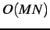,
where is the
number of image pixels and
is the
window size.
Marr and Poggio provided a simple iterative
stereo matching
combining local optimisation with global constraints [7].
It takes account of neighbouring matching positions along each pair
of corresponding epipolar scanlines in stereo images. For each pair,
a 2D interconnected cross-section of the matching score volume in
the disparity space is built. Initially, the volume is filled in
with the local similarity scores-typically obtained by correlation
with small windows. Then the scores are mutually adjusted using
excitation and inhibition links between the neighbouring points in
the disparity space, the links having enforced the uniqueness and
continuity constraints. Weighting factors for the inhibitor links
represent the likelihood of pairwise image correspondences. Zitnick
and Kanade [28]
use instead a fixed 2D excitation region
in the same disparity space. Zhang and Kambhamettu [29]
take advantage of image segmentation in calculating the initial
matching scores using a variable 3D excitation region. The link
weights are updated by a simple propagation of the constraints
across the neighboring matching points. This iterative adjustment
pursues the goal of resolving ambiguities of multiple similar stereo
matches. However, because the global constraints are involved to
only improve the initialising results, the final accuracy heavily
depends on how accurate is the initialisation by local stereo
matching.
The basic drawback of the local techniques
is that global
constraints imposed by stereo viewing geometry and 3D scene
consistency cannot be taken into account directly during the
matching process. Due to global uniqueness, continuity and
visibility constraints, each ``best match'' restricts other matching
possibilities. Typically, an optical surface observed by stereo
cameras are described as samples of specific Markov random field (MRF)
models such that the constrained local disparity variations are
governed by potential functions of neighbouring pairs of disparities
or corresponding image signals as well as variations of the
corresponding signals under the uniqueness constraint. Assuming a
parallel axis stereo geometry, the matching problem is then
formulated as the minimisation of an additive energy function, e.g.
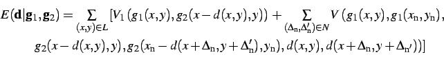
where 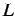 denotes an
image-based planar arithmetic lattice
supporting both a surface and stereo images represented by the
disparity, 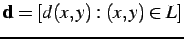,
and intensity functions, 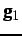 and
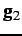, respectively,
of the lattice coordinates 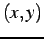 and is a point (pixel) neighbourhood
in terms of a
set of the coordinate increments
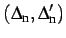.
The like Markovian model can also govern the matching of a
homogeneous texture with multiple positions of equally ``best
matches'' and take account of partial occlusions where matching
of some image areas is in principle impossible. For the most part, such
a constrained
energy minimisation is quite computationally expensive.
Dynamic programming (DP) is applied to solve a 2D optimisation
problem with a goal function by splitting the problem into
N
1D optimisation subproblems dealing each with the goal function with
the continuity constraints only along the epipolar lines (i.e. with
only linear neighbourhoods ).
This considerably reduces the
computational complexity.
Stereo matching by DP, proposed first by
Gimel'farb et al. in
1972 [8]
partitions a stereo pair into a set of
corresponding epipolar scan-lines and finds the most likely epipolar
profile in the disparity space under the linear ordering,
uniqueness, and continuity constraints using the Viterbi algorithm.
Afterwards, Baker and Binford [9] and
independently, many
other researchers have developed different stereo matching
algorithms exploiting the same or closely similar DP optimisation
schemes.
One of the key elements in dynamic
programming is how to define
pixel-wise signal dissimilarity measure under possible spatially
variant contrast-offset distortions of stereo images. The symmetric
dynamic programming stereo (SDPS) algorithm introduced by
Gimel'farb in
1979 [30]
evaluated minimum estimates of most likely contrast and offset
intensity distortions during the scanline-to-scanline DP matching.
In 1981, Baker and Binford [9]
proposed an edge-based DP
stereo matching to account implicitly for photometric distortions.
The basic idea was to match the corresponding edges of two images of
a stereo pair rather than original intensities. Then the disparities
for the best edge matches were interpolated over the untextured
regions. Unfortunately, such an interpolation cannot preserve sharp
discontinuities. Also, the matching itself presumes that the edges
are accurately found in both stereo images. A similar DP algorithm
is described by Raju, Binford, and Shekar [31].
Later, Ohta and Kanade [32] performed this
algorithm with
both the intra- and inter-scanline. They treated a path-finding DP
problem as a search in a 2D plane where vertical and horizontal axes
relate to the right and left scanlines, respectively. A similar
algorithm was proposed also by Lloyd [33]. Intille and
Bobick [34,35] do not use the
continuity constraint
at all, relying upon ``ground control points'' to exclude the need
for any external smoothness constraint. Geiger, Ladendorf, and
Yuille [36]
also treat scanlines independently, but
suppose that disparities are piecewise constant along each scanline
in order to symmetrically enforce strict correspondence between
discontinuities and occlusions in stereo images. Cox [37] and
Belhumeur and Mumford [38]
impose 2D continuity constraints
through inter-scanline constraints. Cox [37] counted and
minimised the total number of depth discontinuities as a subordinate
goal and used either one or two DP stages for efficient approximate
minimisation. Belhumeur and Mumford [38] also minimise the
number of pixels with discontinuities, but generalise the notion of
discontinuity, counting both steps and edges. They introduced a
symmetric energy functional incorporating this count and proposed to
iteratively minimise it with stochastic DP.
A novel variant of the SDPS [30,39] will be
detailed in
Chapter ![[*]](crossref.png) as one of the approaches to estimating
noise in stereo images. In this algorithm, regularisation with
respect to partial occlusions is based on Markov chain models of
both epipolar profiles and image intensities along each
profile [40].
The algorithm accounts for spatially variant
contrast and offset distortions of stereo images by mutual
adaptation of the corresponding signals. The adaptation sequentially
estimates the ``ground" signals for each binocularly visible point
along the profile from the corresponding image signals. The
estimated signals are then adapted to each image by changing their
increments to within an allowable range.
as one of the approaches to estimating
noise in stereo images. In this algorithm, regularisation with
respect to partial occlusions is based on Markov chain models of
both epipolar profiles and image intensities along each
profile [40].
The algorithm accounts for spatially variant
contrast and offset distortions of stereo images by mutual
adaptation of the corresponding signals. The adaptation sequentially
estimates the ``ground" signals for each binocularly visible point
along the profile from the corresponding image signals. The
estimated signals are then adapted to each image by changing their
increments to within an allowable range.
The principal disadvantage of DP
optimisation is that global
constraints are applied only along each pair of the epipolar
scan-lines; the inter-scanline constraints can be taken into account
only approximately, e.g. by iterative alternate matching along and
across the scanlines, respectively. The DP algorithms presume a
single continuous surface due to the ordering constraint making the
corresponding pixels appear in the same order in the left and right
scanlines. Obviously, the constraint is not always met. Also, due to
intrinsic directionality of DP optimisation, local pixel-wise errors
tend to propagate along scanlines, thus corrupting potentially good
nearby matches. As a result, the computed disparity maps may display
horizontal streaks.
Unlike the DP matching, graph optimisation
techniques use global
constraints over the entire 2D images. Matching is formulated as a
maximum-flow/minimum-cut problem [41]. Both
the
stereo images and disparity map are described with a simple Markov
random field (MRF) model taking into account the -disparity
of
and the difference between intensities in each pair of the
corresponding points. The contrast and offset distortions are not
considered assuming that the compatibility constraint holds.
Typically, the MRF model results in the matching score being a 2D
sum of data terms measuring the pixel-wise intensity dissimilarities
and smoothness terms penalising large surface (disparity) changes
over the neighbouring points. Because of multiple disparity values
per point, the exact global minimisation of such goal functions is
an NP-hard problem, apart from a few special cases with very
restrictive conditions on the functions. In principle, the
optimisation can be performed with pixel-wise iterative simulated
annealing (SA) [42,43]. It makes
sequential
small stochastic pixel-wise moves in the disparity space that tend
to improve the goal function and have a specific ``cooling" schedule
to ensure that the random improvement first can reach the global
optimum and then stay within a gradually contracting neighbourhood
of that optimum. But even in the simplest case of binary
labelling [44]
where the exact solution
can be obtained by the network maximum flow / minimum cut
techniques, the SA algorithm converges to a stable point which is
too far from the global minimum. Although SA provably converges to
the global minimum of energy [42], this
could be
obtained only in exponential time; this is why no practical
implementation can closely approach the
optimum [44].
The main drawback of these algorithms is
that each iteration
changes only one label in a single pixel in accord with the
neighboring labels and therefore it results in
an extremely small move in the space of possible labelings.
Obviously, the convergence rate should become faster under
larger moves that simultaneously change labels in a large number
of pixels.
Roy and Cox [45] proposed a much
faster approximate method
based on the preflow-push lift-to-front optimisation algorithm for
finding the maximum flow in a network2.1.
Their method
builds an undirected graph for a chosen reference image and finds
exactly one disparity for each pixel therein. Ishikawa and
Geiger [46]
proposed an alternative optimisation method that
involves the ordering constraint and furthermore distinguishes
between ordinary, edge, and junction pixels. Their method uses a
directed graph and symmetrically enforces the uniqueness constraint.
Both methods smooth surface discontinuities because functional forms
of penalties for discontinuities are heavily restricted (e.g. only
the convex energy terms).
Naturally, graph optimisation is
computationally complex. Hence,
Boykov, Veksler, and Zabih [47]
proposed an approximate
optimisation technique for a wide variety of non-convex energy
terms. Boykov et al [48]
subsequently developed a more
theoretically justified optimisation technique. It is somewhat less
widely applicable, but it produces results provably within a
constant factor of the global optimum [49]. Boykov et
al. [1]
applied these optimisation
techniques to stereo matching with the goal energy functions
allowing for large -expansion
and 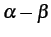 swap
moves in the disparity space. The large moves considerably
accelerate the optimisation. Kolmogorov and Zabih [50]
proposed more complex graphs for stereo matching. The graph vertices
not only represent pixel correspondences but also impose the
uniqueness constraints to handle partial occlusions. Their algorithm
enforces symmetric two-way uniqueness constraints, but it is limited
to constant-disparity continuity.
Two fast approximate algorithms for energy
minimization developed by
Boykov and Kolmogorov [1]
improve the
poor convergence of simulated annealing by replacing extremely small
pixel-wise moves with large moves involving a large number of pixels
simultaneously. The resulting process converges to a solution that
in some cases is provably within a known factor of the global energy
minimum.
The energy function to be minimized is
 |
(2.2.1) |
where 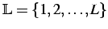
is an arbitrary finite set of labels,
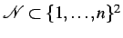denotes
a set of
neighboring, or interacting pairs of pixels,
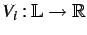
is a pixel-wise potential function specifying pixel-wise
energies in a pixel
under different labels, and
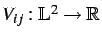is
a pairwise potential function specifying pairwise interaction
energies
for different labels in a
pair 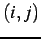
of neighbors. The pixel-wise energies

can be
arbitrary, but the pairwise interaction energies have to be
either
semimetric, i.e. satisfy the constraints
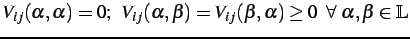
or
metric, i.e. satisfy the same constraints plus
the triangle inequality
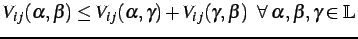
Each pixel labeling, , with a
finite set of indices
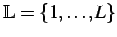partitions
the set of pixels,
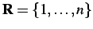,
into disjoint
subsets,
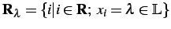(some
of them may be empty), i.e. creates a partition

.
Each change of a
labeling, , changes
the corresponding partition,
.
The approximate Boykov-Veksler-Zabih
minimization algorithms work
with any semimetric or metric, 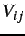, by using large --swap or -expansion
moves
respectively. The conditionally optimal moves are found with a
min-cut / max-flow technique.
for an arbitrary pair
of labels, 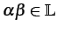,
is a move from a partition,
, for a current labeling,
,
to a new
partition, 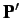, for a new
labeling,
, such that
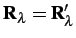
for any label, 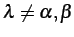.
In other words, this move changes only the labels and
in their
current region,
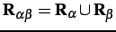,
whereas all the other labels in
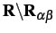remain
fixed. In
the general case, after the --swap, some pixels
change their labels from
to and some
others
from
to . A special
variant is when the label is
assigned to some pixels previously labeled .
of an arbitrary label, ,
is a move from a partition,
, for a current labeling,
,
to a new
partition, , for a new
labeling,
, such that
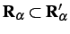
and
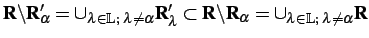.
In other
words, after this move, any subset of pixels can change their labels
to .
The SA and ICM algorithms apply pixel by pixel relaxation moves
changing one label each time.
These moves are both --swap and -expansion,
so that they generalize the standard
relaxation scheme. The algorithms based on these generalizations are
sketched in Fig.
.
Figure:
Block-diagrams
of the approximate minimization
algorithms proposed in [1].
|
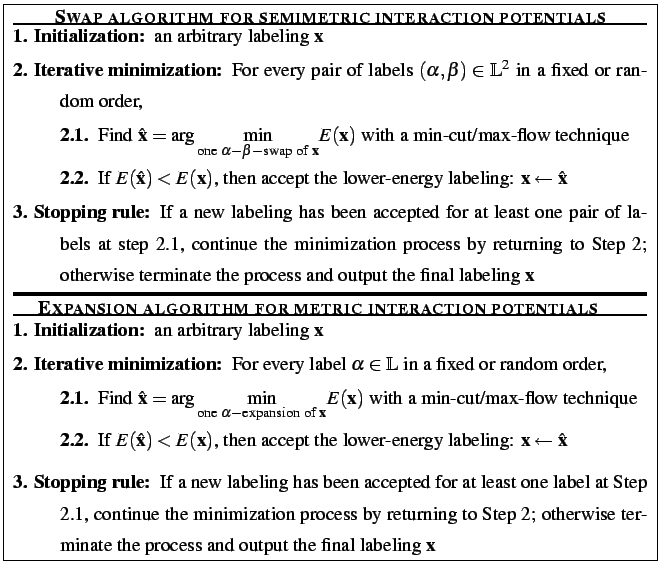
|
An iteration at Step 2 performs individual -expansion
moves in the expansion algorithm and 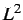
individual --swap moves
in the swap algorithm. It
is possible to prove that the minimization terminates in a finite
number of iterations being of order of the image size .
Actually, image segmentation and stereo reconstruction
experiments [51,1]
have
shown that these algorithms converge to the local energy minimum
just in a few iterations.
Given a current labeling
(partition )
and a pair of labels 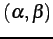 or a label , the
swap or expansion move, respectively, at Step 2.1 in
Fig.
uses the min-cut / max-flow optimization
techique to find a better labeling,
. The latter
minimizes the energy over all labelings within one --swap (the
swap algorithm) or one -expansion
(the expansion algorithm) of and
corresponds to a minimum cut of a specific graph. The swap and
expansion graphs are different, and the exact number of their
pixels, their topology and the edge weights vary from step to step
in accord with the current partition.
The graph,
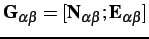,
in
Fig.
for finding an optimal swap-move is built
only on the pixels,
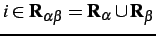,
having labels,
and , in the
partition,
, corresponding to the current
labeling,
. The set of nodes,
 ,
includes the two terminals, denoted and , and
all the pixels in 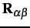.
Each pixel,
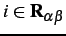,
is connected to the terminals, and ,
by edges 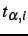 and
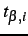-called
,
includes the two terminals, denoted and , and
all the pixels in 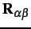.
Each pixel,
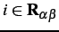,
is connected to the terminals, and ,
by edges 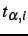 and
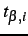-called  -links
(terminal
links) [1].
Each pair of nodes,
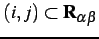,
which are neighbors, i.e.
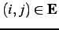,
is connected with an edge, 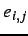,
called an -link
(neighbor link) [1].
Therefore, the set of edges,
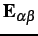,
consists
of the - and -links.
-links
(terminal
links) [1].
Each pair of nodes,
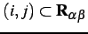,
which are neighbors, i.e.
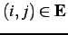,
is connected with an edge, 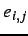,
called an -link
(neighbor link) [1].
Therefore, the set of edges,
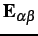,
consists
of the - and -links.
Figure:
Example
graph, 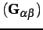,
for
finding the optimal swap move for the set of pixels,
,
with the labels,
and .
|
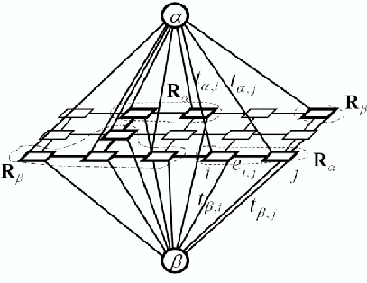
|
If the edges have the following weights:
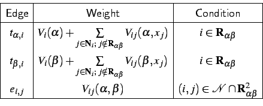
then each cut on
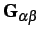
must
include exactly one
-link
for any pixel,
:
otherwise, either there will be a
path between the terminals if both the links are included, or a
proper subset of will become
a cut if both the links
are excluded. Therefore, any cut,
,
provides a
natural labeling, ,
such that every
pixel,
is labeled with
or if the cut
separates
from the
terminal
or ,
respectively, and the other pixels
keep their initial labels (Fig.
):
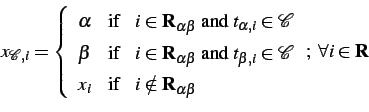
Each labeling
corresponding to a cut,
, on the graph
is one --swap away
from the initial labeling,
.
Figure:
A
cut, , on
for two pixels, 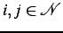,
connected by an -link
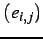:
dashed edges are cut by .
|
|
Because a cut separates a subset of pixels
in
associated
with one terminal from a
complementary subset of pixels associated with another terminal, it
includes (i.e. severs in the graph) an -link, ,
between the neighboring pixels in
if
and only if the pixels
and are
connected to different
terminals under this cut:
By taking into account that
is
a semimetric and
by considering possible cuts involving
-links of and -link
between and and the
corresponding labelings, it is
possible to prove:
THEOREM
2.1 (Boykov, Veksler, Zabih, 2001 [
1])
There is an one-to-one correspondence between
cuts, ,
on
and labelings,
,
that are one - swap
from . The capacity of a cut
on
is
plus a
constant where is
the energy of Eq. ().
COROLLARY
2.1 (Boykov, Veksler, Zabih, 2001 [
1])
The lowest energy labeling within a single --swap
move from a current labeling, , is the
labeling,
 ,
corresponding
to the minimum cut,
,
corresponding
to the minimum cut,  ,
on
.
,
on
.
The set of nodes,
,
of the graph,
,
for finding an optimal expansion-move (see a simple 1D example in
Fig. )
includes the two terminals, denoted and
 ,
all the
pixels, ,
and a set of auxiliary nodes for each pair of the
neighboring
nodes, ,
that have different labels in the
current partition, . The
auxiliary nodes
are on the boundaries between sets in the partition,
;
,
all the
pixels, ,
and a set of auxiliary nodes for each pair of the
neighboring
nodes, ,
that have different labels in the
current partition, . The
auxiliary nodes
are on the boundaries between sets in the partition,
;
 .
Thus the set of
nodes is
.
Thus the set of
nodes is
Figure:
Example
graph, ,
for finding
the optimal expansion move for the set of pixels in the image. Here,
the set of pixels is
,
and the current
partition is
,
where
,
,
and
.
Two auxiliary nodes,
and ,
are added between the neighboring pixels with different
labels in the current partition, i.e. at the boundaries of the
subsets, .
|
|
Each pixel,
, is
connected to the terminals, and
by -links
and
,
respectively. Each pair of neighboring
nodes, ,
that are not separated in the
current partition, i.e. have the same labels  in the
current labeling, is connected with an -link . For
each pair of the separated neighboring pixels,
,
that , the
introduced
auxiliary node, ,
results in three edges,
,
where the first pair of -links
connects the
pixels and to the
auxiliary node ,
and the -link
connects the auxiliary node, , to the
terminal, . Therefore,
the set of all edges,
,
is
in the
current labeling, is connected with an -link . For
each pair of the separated neighboring pixels,
,
that , the
introduced
auxiliary node, ,
results in three edges,
,
where the first pair of -links
connects the
pixels and to the
auxiliary node ,
and the -link
connects the auxiliary node, , to the
terminal, . Therefore,
the set of all edges,
,
is
The edges have the following weights:
That any cut, , on
must
include exactly one
-link
for any pixel, ,
provides a natural labeling,
,
corresponding to the cut (Fig.
):
Each labeling, ,
corresponding to a cut,
, on the graph,
,
is one -expansion
away from the initial labeling .
Figure:
A
minimum cut on
for two pixels
such that
(
is an auxiliary node between the neighboring
pixels
and ; dashed
edges are cut by .
|
|
Because a cut separates a subset of pixels in
associated with one terminal from a complementary subset of pixels
associated with another terminal, it severs an -link, ,
between the neighboring pixels,
,
if and only if the pixels
and
are connected to different terminals under this cut. Formally:
The triplet of edges, ,
corresponding to a pair
of neighboring pixels, ,
that
may be cut in different ways, even when the pair of severed
-links
at and are fixed.
However, a minimum cut
uniquely defines the edges to sever in
in
these cases due to the minimality of the cut and the metric
properties of the potentials associated with the edges,
.
The triangle inequality suggests that it is always better to cut any
one of them, rather than the other two together. This property of a
minimum cut, , is
illustrated in
Fig.
and has the following formal representation:
if
and , then
satisfies the conditions
These properties may hold for non-minimal cuts, too. If an
elementary
cut
is defined as a cut satisfying the conditions in
Eqs. (
)
and (
),
then it is possible to prove
THEOREM
2.2 (Boykov, Veksler, Zabih, 2001 [
1])
Let a graph,
,
be constructed given a
labeling and . Then,
there is an
one-to-one correspondence between elementary cuts on
and labelings within one -expansion
from . The capacity of any
elementary cut is
where is
the energy of Eq. .
COROLLARY
2.2 (Boykov, Veksler, Zabih, 2001 [
1])
The lowest energy labeling within a single -expansion
move
from is the labeling,
,
corresponding to the minimum cut,
,
on .
Although the swap move algorithm has a wider
application, as it has
only semimetric requirements on potentials
,
generally it possesses no proven optimality properties. However, a
local minimum obtained with the expansion move algorithm is within a
fixed factor of the global minimum, according to
THEOREM
2.3 (Boykov, Veksler, Zabih, 2001 [
1])
Let be a
labeling
for a local energy minimum when with the expansion moves are allowed,
and let be the
globally optimal solution.
Then,
where
Proof.
Let some
be fixed and let
.
Let
be a labeling within one -expansion
move from such that
Since is a local
minimum if expansion
moves are allowed,
Let
be union of an
arbitrary subset, ,
of pixels in
;
,
and
of an arbitrary subset,
,
of neighboring
pixels in ;
.
A restriction of
the energy of labeling to
is defined
as
Let ,
,
and
denote the union of pixels and
pairs of
neighboring pixels contained
inside, on the
boundary
and
outside of
,
respectively:
The following three relationships hold:
The relationships
(a) and
(c)
follow directly from the definitions
of
and .
The relationship
(b)
holds because
for
any .
The union
includes all the pixels in and all the
neighboring pairs of pixels
in . Therefore, Eq. () can be
rewritten as
By substituting the relationships
(a)-
(c),
one
can obtain:
To get the bound on the total energy, Eq. (
)
has to be summed over all the labels
:
For every
,
the term
appears
twice on the left side of Eq. (
): once in
for
,
and once in
for
. Similarly, every
appears
times
on the right side of Eq. (
).
Therefore, Eq. (
) can be rewritten as
to give the bound of
for the factor of the global
minimum.
Unlike the minimum-cut algorithms that find
an approximate minimum
of an energy function, belief propagation (BP) techniques pass
messages and update belief values over the Markovian belief network
in order to find an optimum labelling. The message from a node
consists of its label (i.e. the disparity value) and the confidence
about the state of the node. This confidence can be efficiently
computed with the truncated linear model [52]. The
messaging illustrated in Figure can be
considered as an iterative action in which each node receives
messages from its neighbours and then a new belief about each node
is computed. Global constraints govern the propagation of
information from each stable matching point to neighbouring unstable
and likely occluded ones until the propagation process converges. In
most cases, colour segments of a reference image constrain
confidence propagation to each region.
Figure:
Local message passing in a graph with six neighbors X1, X2,
X3, X4, Y1 and Y2
|
|
Figure:
The
Belief Propagation
algorithm.
|
|
Figure
summaries BP algorithm. Many BP
implementations [52,53,54,55,56] perform
iterative global optimisation using the max-product BP algorithm. In
experiments with the Middlebury stereo test-bed [4], these
optimisation techniques achieved the highest ranking .
Apart from the powerful graph-cut algorithms, other approximate
techniques have been used for stereo matching by global energy
minimisation. In particular, Saito and Mori [
57] in 1995
first applied a
genetic algorithm (GA) to
stereo vision.
Different window sizes were used to find several candidate disparity
values at each pixel location, and then the GA selected the
disparity for each pixel from these candidates under the global
continuity and uniqueness constraints and the assumption that the
correct disparity must be among the candidates found. Gong and Yang
extended this algorithm by considering both occlusions and false
matches [
58].
The improved algorithm could detect and
remove occlusions and mismatches that violate the visibility
constraints.
Layered models provide a new avenue for
stereo matching. They allow separate patches at different
positions in a 3D
scene rather than only a single surface and reconstruction of
piecewise smooth surfaces. The
primary advantage of this model is that each pixel being the minimum
element in the previous methods can be placed semantically to image
regions and each surface patch for the image region can get its own
identification. Hence, it is possible to model hidden connections
among visible surface patches or isolate occluding regions.
Modelling of surface layers helps to avoid
many incorrect decisions
stemming from the ``best matching" by the signal correspondence.
When combining layers, there need not be exactly one surface per
pixel. Instead, the pixel correspondences are grouped into candidate
volumes or labelled with no surface for an occluded region. By
warping a reference left image according to an initial depth map,
Baker, Szeliski, and Anandan [59] developed a
layered
method for stereo matching that minimises the re-synthesis error
between the warped right image and the real right view. The
disparity of each surface patch is modelled as a plane with small
local variations that is similar to the model for a window
correlation. The surface continuity is enforced by spatial smoothing
of the matching likelihood scores.
Considering connected or slant surfaces,
Birchfeld and
Tomasi [60]
assigned pixels to surfaces using the
graph-based techniques of Boykov-Veksler-Zabih [47].
Boundaries along the intensity edges were constrained by assigning
exactly one disparity value for each image location. Lin and
Tomasi [61]
extended this work using the most significant
symmetric differences between the input images and a spline model
for the layers. Tao and Sawhney [62,63] described a
colour segment-based stereo framework for a layered model. They
assume small disparity discontinuities inside homogeneous color
segments if a disparity hypothesis is correct. As Baker et
al. [59],
they also warp a reference image to another view
in line with an initial depth map and render the image to match the
real scene. Then, the minimisation of the global image similarity
energy leads the final result. Segmentation reduces the dimensions
of disparity space and ensures the disparity smoothness over
homogeneous regions. The expensive warping and inference of
reasonable disparities for unmatched regions can be avoided with a
greedy local search based on a neighbouring disparity hypothesis.
Bleyer and Gelautz [64]
extended this framework and
applied a modified mean-shift algorithm [65,66]
embedding planar dissimilarity measurements to extract clusters of
similar disparity segments. Hence, the algorithm has the same
limitation, namely, the input images have to be well approximated by
a set of planes. In other words, the segmentation must accurately
find real layers existing in an observed scene. Generally, this
cannot be guaranteed if the scene contains objects with more complex
surface structures.
A New Proposal: Concurrent Stereo Matching
The preceding brief overview highlights
what are the main
disadvantages of published algorithms. Almost all
conventional
stereo approaches other than the layered algorithms, search for a
single optical surface that yields the best correspondence between
the stereo images under constrained surface continuity, smoothness,
and visibility. Most of the constraints are ``soft", i.e. limited
deviations are allowed. The matching scores used are
ad hoc
linear combinations of individual terms measuring signal similarity,
surface smoothness, surface visibility and occlusions with
empirically chosen weights for each term.
The resulting NP-hard global optimisation
problem is approximately
solved with many different techniques, e.g. dynamic
programming [39,67,32,68], belief
propagation [53,54] or graph min-cut
algorithms [37,1,69]. However, the
chosen values of the weights in the matching score strongly
influence the reconstruction accuracy [11]. In addition,
most of the conventional matching scores take no account of
spatially constant or variant contrast and offset deviations.
Typical stereo pairs contain many admissible matches, so that the
``best" matching may lead to many incorrect decisions. Moreover,
real scenes very rarely consist of a single surface, so this
assumption is also too restrictive.
Figure illustrates problems that can be
encountered with single surface binocular stereo reconstruction as
well as with regularisation of stereo matching for a multiple
surface scene. A section through a set of surfaces along with the
corresponding piecewise-constant intensity profiles in the left and
right images is shown in Figure (a). Grey areas in
Figures (b)-(d)
show matching regions.
Figure (b)
shows that an erroneous single surface
profile may easily be constructed by applying smoothness and
ordering constraints. Other reconstructions (from the many possible)
are shown in Figures (c) and (d). Moreover, the
corresponding (precisely matching) areas do not reflect the actual
scene unless occlusions are taken into account. Without additional
constraints, it is impossible to discriminate between possible
solutions.
Figure:
Multiple and single profile reconstructions
from a stereo pair with piecewise-constant signals for corresponding
regions:
(a) actual disjoint surface profiles;
(b) signal-based corresponding areas within a single continuous
profile,
(c) one (extreme) disjoint variant, and
(d) one restricted to a fixed disparity range.
|
|
Furthermore, even low level signal noise
that does not mask major
signal changes in Fig. hinders the conventional
matching paradigm because it is based on the maximum similarity
between the signals for a reasonably constrained surface. In this
simple example, the closest similarity between the initially equal
signals distorted with independent noise can lead to selection of a
completely random surface from a set of admissible variants
specified by both signal correspondences and surface constraints.
Given a noise model, a more realistic stereo
matching goal is to
estimate signal noise and specify a plausible range of differences
between corresponding signals. The noise estimates allow us to
outline 3D volumes that contain all the surfaces ensuring a `good
matching'. Then the desired surface or surfaces may be chosen using
surface constraints only.
Figure:
`Tsukuba' stereo pair: distribution of signal differences (top left), , and
grey-coded absolute signal differences (bottom right),
,
for one pair of epipolar lines (y=173)
vs. the actual profile.
|
|
Generally, stereo matching presumes the
availability
of a signal similarity model that accounts for changes in surface
reflection for any potential noise sources.
However, most stereo matching scores in computer vision,
including the best-performing graph minimum-cut or belief propagation
ones,
use very simple intensity dissimilarity terms
such as the sum of absolute signal differences (SAD) or square
differences (SSD) for all the binocularly visible surface points.
The underlying signal model assumes equal corresponding signals
distorted by an additive independent noise
with the same zero-centred symmetric probability distribution.
Such a simplification is justified for a few stereo pairs typically
used for testing algorithms in
today's computer vision, e.g., for the Middlebury
data set [4].
However, this simplification is totally invalid in most practical
applications, e.g. for
aerial or ground stereo images of terrain collected at different times
under changing illumination and image acquisition conditions.
More realistic similarity models must take account of global or local
offset and contrast signal distortions [67,68].
Table 2.1:
Distribution
of intensity differences for corresponding points in the `Tsukuba'
scene: % of the corresponding points with the absolute intensity
difference
in the indicated range where x-disparities are
derived from the ground truth (True) and the model reconstructed by
SDPS, GMC and BP algorithms. The final column contains D,
the sum
of square distances between the distributions for the ground truth
and the reconstructed models.
|
0 |
1 |
2 |
3-
5 |
6-
10 |
11-
20 |
21-
30 |
31-
60 |
61-
125 |
126-
255 |
D |
| True |
18.5 |
29.6 |
19.5 |
19.1 |
6.6 |
3.7 |
1.4 |
1.2 |
0.4 |
0.0 |
|
| SDPS |
20.9 |
30.9 |
18.1 |
17.9 |
6.7 |
3.7 |
1.2 |
0.6 |
0.0 |
0.0 |
8.5 |
| GMC |
17.2 |
25.3 |
15.5 |
17.3 |
8.9 |
6.9 |
3.3 |
2.2 |
1.4 |
0.0 |
60.9 |
| BP |
17.2 |
30.4 |
19.7 |
21.5 |
6.4 |
3.6 |
1.0 |
0.8 |
2.3 |
1.2 |
13.6 |
For the `Tsukuba' stereo pair from the Middlebury data
set [
4],
Table
shows empirical
probability distributions of absolute pixel-wise signal differences,
,
for the corresponding points in the supplied "ground truth"
and for three single-surface models reconstructed by symmetric
dynamic programming stereo (SDPS), graph minimum cut (GMC),
and
belief propagation (BP) algorithms in a given -disparity range
.
Effectively, this
distribution shows the discrepancy in a real image pair from the
assumed simple signal model. Fig.
(top
left) plots this distribution and shows grey-coded signal
correspondences for one epipolar line (
y=173)
in terms of the
pixel-wise absolute differences - black regions corresponding to
. The multiplicity of possible
matches is clearly
seen
2.2.
The distribution obtained with the SDPS algorithm [
68] is
closest to the true one. The overlaid true surface profiles show
that in this example, the single-surface approximation is close to
the actual disjoint scene only due to a small -disparity range
. SDPS and its use for
estimating the image noise
are further discussed in Chapter
.
To sum up, the disadvantages of the
conventional stereo algorithms
are:
- A vast majority of these algorithms takes
no account of the intrinsic ill-posedness of stereo matching problems,
hidden image noise and likely photometric image distortions
(e.g. contrast and offset different). This problem will be discussed
further in
Chapter .
- They search for a single surface giving
the best correspondence between
stereo images although the single surface assumption is too restrictive
in practice.
- They rely upon ad hoc
heuristic matching scores such as weighted linear combinations of
individual terms measuring signal dissimilarity, surface curvature,
surface visibility, and occlusions.
- Weights for the matching scores are
empirical selected and dramatically effect the matching accuracy; no
theoretical justify the selection of these weights or the matching
score as a whole exist.
- Processing stereo pairs, with the large
disparity ranges, is difficult because of the high computational
complexity of the most effective global optimisation algorithms.
This thesis proposes and elaborates a new
stereo matching framework
based on the layered model of an observed 3D scene. The framework
reduces the disadvantages of more conventional previous methods by
including an original noise estimation mechanism and less
restrictive statement of the matching goals. This new framework,
named ``Noise-driven Concurrent Stereo Matching" (NCSM)
in [12,15,16], clearly separates
stereo image matching
from a subsequent search for 3D visible surfaces related to the
images. First, a noise model which allows for mutual photometric
distortions of images is used to guide the search for candidate 3D
volumes in the disparity space. Then, concurrent stereo matching
detects all the likely matching 3D volumes, by using image-to-image
matching at a set of fixed depths, or disparity, values - abandoning
the conventional assumption that a single best match can be found.
The matching exploits an unconventional noise model that accounts
for multiple possible outliers or large mismatches. Then a process
of surface fitting or 3D surface reconstruction proceeds from
foreground to background surfaces (with due account for occlusions),
enlarging the corresponding background volumes into occluded
regions and selecting mutually consistent optical surfaces that
exhibit high point-wise signal similarity.

![\includegraphics[width=5.81cm]{tsukuba-r-173marked}](img211.png)
![\includegraphics[width=4.32cm]{tsukuba-l-173marked_rot90}](img212.png)